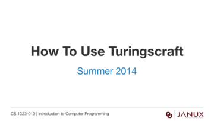
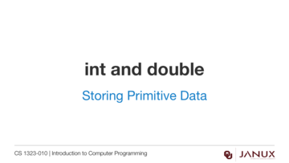
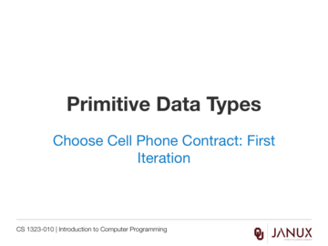
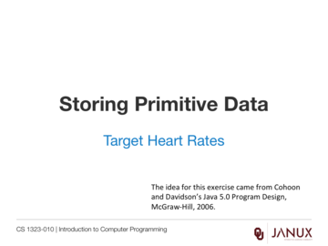

Storing Primitive Data
This section covers storing primitive data.
An introduction to primitive data types, identifiers, variables and constants.
Lecture presentation
Lecture presentation
Lecture presentation
Lecture presentation



